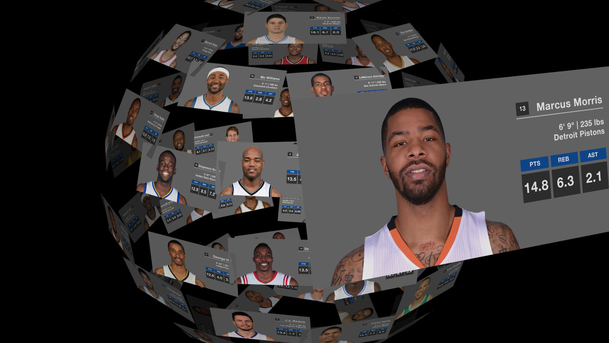

Exploring Your NBA Stars
Installation Piece
Exploring Your NBA Stars is an interactive installation piece where players are allowed to take their own adventure with a virtual NBA player collection by controlling the camera in a 3D world using various hands gesture. In this project, I collected the top 85 players based on the Player Efficiency Rating (PER) value in this season, and displayed each of them with their data including name, number, stats, and image, etc. My goal for this project is to allow players to enjoy their time by appreciating those player leaders cards in a virtual world.

Why do I make it?
I started watching NBA games when I was seven. And it’s been for sixteen years until now. I love collecting all types of NBA players cards, including All-stars, regular season and postseason. I really enjoy putting them all together and appreciating them. However, the cards are not easy to collect and sometimes expensive. On the other hand, cards always have smaller text which makes me hard to read. In this case, I decided to create a virtual NBA player leader collection where viewers are able to either look through the entire collection or play around specific single card, in order to give more agency to the views and help them enjoy their time with NBA.
Design and Functionality
For each card, I included player’s headshot, name, number, team name, and weight, as well as the performance including points, rebounds, and assistance. I chose to use blue as the basic color of each card and design because it is from NBA logo. When I was thinking about how to display these cards, my inspiration came from the huge monitor on the ceiling of gyms. I made some modifications to that short column shape monitor to have it look like a ball/sphere, so that could be rotated and looks like an exhibition. In terms of interaction patterns, I designed several gestures to control the object (Technically it is controlling the camera, but not the object). I enabled it to zoom in large enough to enjoy single card, rotate to look through the collections, and move/pan the object. In addition, I also enabled players to select one object and perform the same actions that I mentioned above to that single object.
Technical Consideration
In order to finish this project, I mainly used three.js and webGL to create this 3D world and other objects(cards). I created eighty-five planes as cards to hold eighty-five players information, with assigning each of them the specific player data. Then I created a 3D scene using webGL, where I had a scene, a camera, a light system, coordinates and a renderer. Basically in this part, what I am doing is creating scenes and objects and display them in the way I want them to be.
Meanwhile, I used Leap Motion to control objects in the scene. I mainly used two libraries to enable Leap Motion gesture control. One is called LeapCameraControl, and the other one is called LeapObjectControl. They worked almost in the same way with minor difference. By binding various manipulations objects with different hands gestures, I empowered players to manipulate objects in the scene with their hands. Actions include zooming in/out, rotating, and moving objects.
Future Works
Due to the tight schedule, I don’t have time to complete all the effects as I was expecting. There are still two minor problems need to be solved in my future works if possible:
How CSS3D Renderer work with Leap Motion Control?
Actually in the process, I tried mixing CSS3D Objects with WebGL renderer. However, It didn’t work. CSS3D objects take their advantages of controlling their visual appeals by CSS style sheet, which is more flexible. On the other hand, WebGL is more friendly to Leap Motion Control as opposed to CSS3D Renderer. In this case, how to take both advantages out and put them together, should be the next step of this project.
How to display different contents on double sides?
Using webGL renderer makes it easy for users to manipulate objects through Leap Motion. However, it comes to be a disaster when I tried to display different contents on each side of the plane. There are two ways to solve this problem. One is to merge two planes back to back as one object. The other one is display different texture on a super thin cube. The former solution makes it impossible for Leap Motion to control these merged objects. The latter one adds up the CPUs work which impediments the fluency of display effects.
Additional Resources
I filmd this instructional video for you to have a better sense of what exactly it can do.